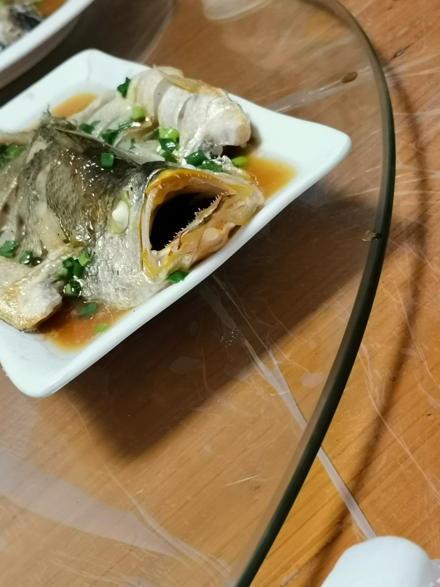

拖了两个月才开始写 不愧是我
虽然看上去像玩了三天但其实满打满算只有两天
虽然是孤独传说 但这次孤独传说有伴了 但某种意义上还是孤独传说
虽然行程和计划差了挺多 但总的来说 能看到海就是好事！我满足了
流水账记事 依旧存在大量同人女发言
依旧无修配图 排版依旧0审美
05.21
6：00 P.M.
周五下午上完微分方程之后回宿舍光速收拾了一波行李就出发了
明明应该没什么好带的 但还是收拾出了一个箱子+一个包
因为要去海边 所以把pio带上了 专属模特来叻
虽然但是 整个上车前的经历十分跌宕
因为原定出发点在北门所以和同行的A小姐一起把行李放在楼下就冲到集合点去拿帐篷睡袋结果到太早等了好久然后还要进宿舍楼从楼上搬下来而且因为是女生宿舍所以只有女生能进搬完最后一批装备之后因为其他人都只有一个包所以直接往出发点走了我和A小姐只能冲回宿舍拖起箱子就是一个刺的冲
结果冲到北门发现一个人都没有看消息才知道大家都在对面的开封菜集合于是又在华灯初上的剑川路上继续狂奔 直到看到一群人乌泱泱地站在开封菜门口才安下心
此处应有卡其脱离太（
总之有惊无险地坐上了大巴 看海之旅 哈吉马路哟！
大巴上还进行了经典自我介绍环节 于是发现大部分都是大三大四的学长学姐 打扰了（
不过有一说一 还是第一次和这么多不认识的人一起坐大巴出来玩 还挺兴奋
9：00 P.M.
车开了两个小时终于到了码头，一下车一片漆黑荒野只有远处的工厂还亮着光 笑死
原本我们的营地是在停车场 但是值班的工作人员出于安全考虑让我们在侯船大厅门口扎营 很感动
扎营time虽然没有出发那么慌乱 但也挺手忙脚乱的 一开始搭好了内帐结果发现外帐不匹配 然后发现很多都不匹配 很尴尬（
最后挑出了搭好的帐篷开始一一分配 分到了一座大帐篷 还带反光条 还专门有一个放鞋的拐角 好酷 孩子很开心
分好帐篷 铺好防潮垫和睡袋 任务完成✔
这次同行的人里有好多都是户外大佬 强大
有个人的头灯好酷 我也想整一个（
11：00 P.M.
扎完营有经典夜聊环节 我（坐了两分钟）：聊不来 走了走了
于是和A小姐回到帐篷里开始继续拍拍
有请唯一指定模特pio登场（
感谢A小姐的手友情出镜
感谢A小姐的手机友情出镜
各种拍拍之后开始躺在帐篷里胡言乱语 放空一切的感觉真的很快乐
领悟到这种心境（？）之后开始代餐（传统艺能来叻
虽然但是 我是真的想看bw四个人自驾露营
想看jesse和genji各种打闹口嗨（？）最后累到瘫在帐篷里叠叠乐 不知道谁的一条腿还伸在帐篷外面
想看我cp在星空下剖析心路历程 倒也不是很正式地谈人生谈过去谈理想 大概就是有一搭没一搭地聊天 看到另外两人吵吵闹闹的样子不时吐槽几句 聊着聊着就到了后半夜 手里的酒也喝得差不多了 打算睡下发现另外俩人歪七扭八地躺在地上只能叹气的同时又觉得好笑 把俩人塞进帐篷里后早就没了能容下第三个人的位子 于是爹让对方进了另一座空帐篷 自己转身上了车 没有什么进展 第二天两个人若无其事地吐槽另外俩人 然后回了基地 没有任何变化（真的是粉
我太想看了 布莱克沃驰就是四口之家（开始了
————————代餐结束————————
远处是夜聊的欢笑声以及似乎是羊叫一般的申必声音 我俩就这么歇了 本帐篷或成全营地睡眠冠军
有一说一 第一次睡帐篷 居然很快睡着了 感动
05.22
6：30 A.M.
因为要一大早起来坐船 所以听到闹钟腾一下就起了 结果发现起的人也没有很多（
好安静啊.mp3

虽然昨晚睡得很好 但一站起来还是感受到了腰酸背痛 这就是和大地母亲亲密接触的代价吗
洗漱过后突然开始下雨 于是紧急收拾帐篷 海边的风吹起来还是有点凉 于是开始担心接下来的行程
不过还好 最终还是没有太辜负
雨来的快去的也快 看雨停了拿起行李和装备就开始进行一个竞走（

到了大厅游客意外的还挺多 看到一大群人扛着大包小包手上还拿着覆着锡箔的海绵垫 感觉也是挺新鲜的哈（
上岛的船是快艇 所以不能上甲板 只能坐在座位上看窗外 途中一直有淅淅沥沥的小雨 不过也别有一番氛围
椅子比睡袋舒服 大家一起即刻昏睡

坐在船上反复循环《Let Her Go》 不知道为什么 感觉特别贴合当时的天气
于是开始代餐（开始了
这种寂寥孤独的感觉真的很适合我cp
10：30 A.M.
坐了一个小时的船之后 终于上岛了！
说实话 不是很懂为什么叫枸杞岛这么养生的名字（
再次搬下大包小包 坐上了岛上的出租车 岛上的路让人梦回福建 熟悉的七拐八绕 很感动（
司机转弯加速非常顺滑 坐在车里像被摇匀了一样 体验很好（这是伏笔 等下要考）
到了民宿 因为人多所以我们十分豪气地把一整家民宿都包下来了 爽到
再次把大包小包放下之后开始选房 因为房间不够所以需要拼成三人间 也许下次自己和朋友一起来体验会更好吧
简单收拾完出发觅食！既然到了海岛那当然得吃顿海鲜
选了家看上去人蛮多的店 蟹炒年糕好恰 酱汁调得好好 吃的让我想回家（
上海（特指闵行）真的吃不到海鲜 我好馋
虽然但是 还是家里海鲜好恰 放假了我狂暴轰入
1：30 P.M.
吃完饭出发去景点 第一站————东海绝壁
此处回收伏笔 司机全程不减速转弯甚至加速要不是窗户关着感觉自己要飞出去（
下车的一瞬间感觉灵魂得到了升华
说完司机的高超技术来说说景点 景如其名 整个景点位于海边的悬崖上 据说是全岛（？）最东边
虽然天很阴 但景色还是很好 视野很开阔 看着海面就感觉整个人宁静下来了
虽然都是海边 但悬崖礁石和沙滩给人的感觉完全不一样 站在崖边吹着海风就感觉似乎一切都可以为我所掌握 有种独立于世的孤寂感
看着海浪拍打礁石留下白色的泡沫 隐隐可以听见夹杂在风中的海浪声 真的不管经历多少次都不会看厌
看到有个人在礁石缝隙中垂钓 不知道能钓到啥 好酷（？）

逛拍逛拍的时候天公终于开始作美 出来第一次见到阳光（
顺便非常幸运的是居然看到了两只海豚 远远地看到两个背鳍冒出海面又下潜 太惊喜了
逛了俩小时 刚好太阳出来了 光线绝佳 前往第二站————无人村（绿野仙踪其实更好听点（
4：00 P.M.
绿野仙踪 真的很绿
蚊子也是真的多
但景色还蛮不错的 奈何体力不行 没能爬到山顶 不然风景应该更好

介绍说是后来岛上建设因为这个村太偏了所以人都搬出去了 自然 很奇妙吧
不过其实这里要是只有三两个人一起来 还是会有点心里发毛的感觉
适合电影取景 yysy
爬到半山之后我们就往下走了 没想到底下是一片石滩 每次和海平面近距离接触都会感觉自己真的只是沧海一粟
集合点选在入口的平台上 又一次非常幸运的是 我们走上平台的时候云整个散开了 虽然夕阳晒得人睁不开眼 但是景色真的太棒了
夕阳下远处海天相接的地方呈现出迷幻的淡紫色 除了几片薄云和模糊的轮船轮廓 眼前只剩下平静的海面和细微的浪花 太喜欢了
狠狠地代了（又来了
照片和文字在大海面前真的显得苍白无力 站在高处眺望望不到边的湛蓝海面时所受到的心灵震撼真的是每个人当时当地的瞬时感受 事后不管用什么媒介都无法将其完整再现
就感觉看着大海 什么糟心事都被翻腾的浪涛所吞没溶化 只剩下宁静
趁着阳光拍了合照 唯一可惜的是因为地点离民宿确实有段距离所以没能在这里等待落日 蛮遗憾的
也许下次有机会再见
伏笔二度回收 回去的时候又是那个秋名山司机 甚至飙得更快了
花旅游的钱白坐一次过山车 血赚啊（
建议 啊 把这个也开发成一个旅游项目 绝对赚钱（
回到民宿从窗外探出去 早上还是一片阴云的海岛在夕阳的映射下变得柔和而温暖
一天能以这种景色作为结尾真的太满足了
7：00 P.M.
晚饭是民宿做的海鲜大餐 三十几个人摆了三桌坐满一楼 有种梦回福建酒席的感觉
虽然我也不是冲着吃的来的 但是菜还是没有家里好吃（dbq
唯一留影纪念的是这条面目狰狞的清蒸鱼 太好笑了 不过还挺好恰

吃饭时间固定团建环节 紧张刺激的石头剪刀布让人完全没心思吃饭 笑死
吃完饭有人提议去海边逛 我：八点了 累了 摸了 歇了（
据回来的A小姐repo 大家放了烟花喝了酒还吃了烧烤 感觉氛围会很棒 可惜
不过让我再选一次的话应该还是会选择摸（
05.23
7：00 A.M.
要返程啦 清晨的海岛又是另一种感觉 趁着还没出发再拍几张
去码头的时候路上又下起了小雨 看来昨天下午真的是运气太好
又经过一番兵荒马乱的集合装货上车下车卸货集合后 终于坐上返程的船叻
很生草的一点是我们的票在下舱 而下舱是在水里的 所以没有窗户 人也很多
搭配上暗黄色的墙壁和不充足的照明
一转偷渡客（no
9：00 A.M.
因为下舱坐着实在太晃于是上甲板透透气
虽然有雨但还好我们的航班没有取消 不过走到舱外才感觉到风浪还是蛮大的
又是不一样的海呢
返程的船大概开了三个小时 不得不说 下舱对晕船星人确实不太友好
但最后总算重新踏上坚实土地坐上回学校的大巴 车上依旧惯例团建 事实上这几天下来自闭如我还是没认识什么人 但还是很快乐
唯一的缺憾大概就是没能看到日出和日落吧
回去的时候大家一起合唱《干杯》 氛围真的很契合了
美好的时光总是短暂 梦境结束后终究还是要回归现实
但总归留下了一些可供反复咀嚼的回忆
1：00 P.M.
虽然看上去像已经结尾了 但还有几句废话要说
临近学校的时候雨突然变大 而下车地点离校门还有段距离 于是
还记得从始至终都在刷存在感的那堆装备吗
自行想象一群人是怎么冒着雨把东西送回宿舍楼的 凄惨而好笑 但也不失为旅行的一部分
血的教训：能不带箱子就不带箱子 下次一定压缩行李
还有一点点遗憾的就是 本来和A小姐说好带上美⚪时光和波⚪海苔在海边翻拍广告 结果因为感觉三十几个人里只有我们俩打算干沙雕事于是只好作罢
不过四舍五入也算是两包去过故乡（？）的海苔了
至此，jjpd的上岛之旅到此结束！！完结撒花！（啪唧啪唧
其实这么一看代餐发言也没有很多 不过我早晚都要写一次我cp海边聊天的（
最后大喊一句：我爱大海！！！所有人都应该看一次海！！！
我爱大海！！！（破音）